UDN
Search public documentation:
ExampleMapsJP
English Translation
Interested in the Unreal Engine?
Visit the Unreal Technology site.
Looking for jobs and company info?
Check out the Epic games site.
Questions about support via UDN?
Contact the UDN Staff
Interested in the Unreal Engine?
Visit the Unreal Technology site.
Looking for jobs and company info?
Check out the Epic games site.
Questions about support via UDN?
Contact the UDN Staff
サンプルマップ
本書の概要：全サンプルマップの目次です。 本書の変更記録：最終更新者Jason Lentz（Main.DemiurgeStudios）により、各サンプルマップのダウンロードURLを変更。原文作成者はJason Lentz（Main.DemiurgeStudios）。はじめに
文中では、デモおよびサンプルマップのリンクをご紹介しています。マップ解説ページの新規作成、既存ページやリンクの改訂、およびそれらをこのサイトからのリンク先として追加するなど、ご自由に行って下さい。 サンプルマップの中で、説明を読みたい特定のマップセクションの下にあるリンクをクリックします。「サンプルマップ」のページに対応するサンプルマップの実体データはこのページの最後でダウンロードして下さい。 この文書はサンプルマップを、（ライト、ムーバー、ボリューム、 環境、特殊効果、およびその他、とタイプで分類した分かりやすい編成になっています。複数のカテゴリーに当てはまるマップもありますので、検索中のマップがあるセクションに見当たらない場合、別の関連セクションをご確認下さい。ライト
ライティング効果の拡張機能
ExampleMapsAdvLighting （サンプルマップ 拡張ライティング） このマップでは、投影機能、StaticMesh (静的メッシュ)、シェーディング機能、およびライトを自在に組み合わせて様々なライト効果を作成する方法をご覧いただけます。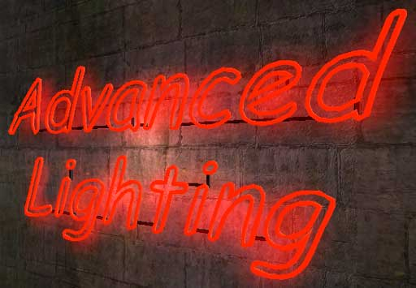
光線
ExampleMapsLightBeams （サンプルマップ 光線） ユーザから投稿されたこのマップでは、SpriteEmitter （スプライト エミッタ）や投影機能を使った、よりリアルな光線の作成方法をご覧いただけます。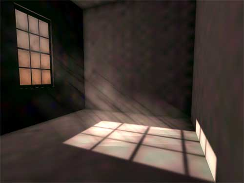
トリガ化するライト
ExampleMapsTriggerableLighting （サンプルマップ トリガ化するライト） ここではトリガ化するライト作成の基礎、および光に照らされた道筋や蛍光灯のライト（近日公開）をご覧いただけます。
蛍光灯のライト
ExampleMapsFluorescentLights （サンプルマップ 蛍光灯のライト）（注：このマップはビルド927用です。） このマップにはリアルな熱蛍光を表現できる8種類のライトがあります。これらはオンにするとしばらく点滅し、その後点灯に切り替わります。サウンドをつけると、点滅に合わせて音もオン、オフを繰り返します。音が聞こえるようにボリュームを大きくしてください。かなりの調節が可能です。2107用の揺れるライト
ExampleMapsSwingingLamp （サンプルマップ 吊りランプ）（注：このマップはビルド2107 UT2K3用です。） このチュートリアルはKarma （カルマ）、投影機能、エミッタのすべての効果を、相互作用するひとつの効果へと合成処理する方法を、実例を挙げてご紹介します。ムーバ
複雑なムーバ
ExampleMapsComplexMovers （サンプルマップ 複雑なムーバ） このマップでは、天井がひとりでに上昇する監禁牢や8個以上のキーフレームを使ったジェットコースターなど、より見ごたえのある効果の作成を支える複雑なムーバの配置方法についてご紹介します。
ボリューム
上昇する水位
ExampleMapsRisingWater （サンプルマップ 上昇する水位）（注： この説明に出てくるマップは、ビルド927および2136用です。） ここに二つのサンプルマップがあります。上のマップをご覧下さい。WaterVolumes（水量）の調整が可能であること、滝のエミッタによる滝底の動く様子がお分かりいただけます。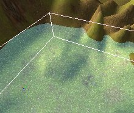
下のマップは水が満ちたり引いたりする小さな部屋ですが、この水面はプレーヤの侵入に反応するフルイドサーフェスです。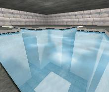
環境
SkyZones （スカイゾーン）
ExampleMapsSkyZones （サンプルマップ スカイゾーン） この説明ではスカイボックス、スカイシリンダ、そしてスカイドームなどを利用した様々なSkyZonesの作成をご覧いただけます。さらにSkyZoneによって実現される効果を説明しながら、各タイプのメリットとデメリットを指摘しています。
鍾乳洞
ExampleMapsCaverns （サンプルマップ 鍾乳洞） 暗い鍾乳洞を、主に二つのテレインを利用して素早く簡単に作る方法をご覧いただけます。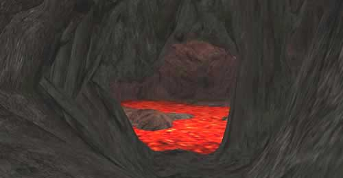
特殊効果
WarpZones （ワープゾーン）
ExampleMapsWarpZones （サンプルファイル ワープゾーン） このサンプルマップでは、物体の外観よりも大空間が中に広がるようにする効果を作成する方法を、実例を挙げてご説明します。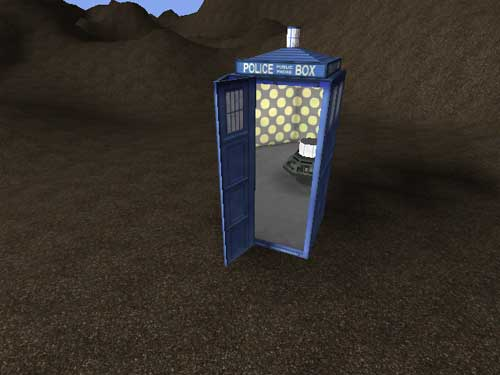
テレポータ
ExampleMapsTeleporters （サンプルマップ テレポータ） ここではレベル内や異なるマップ間でテレポートを実現する様々なテレポータアクタのプロパティの使い方をご説明します。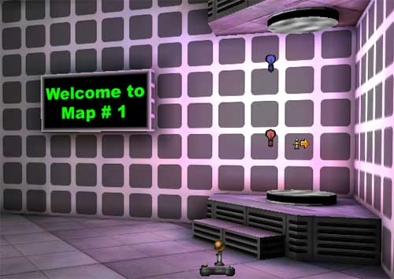
パーティクル手法
ExampleParticleSystems （サンプル パーティクル手法） このサンプルマップでは、滝、火花、スポットライト、炎、そして爆発などをはじめとした、幾通りもの素晴らしい効果を作成するために、多種多様なエミッタを組み合わせる方法をご紹介しています。

拡大するプール
ExampleMapsExpandingPool （サンプルマップ 拡大するプール）（注： このマップはビルド927用です。） このマップでは、拡大するプール（液体の溜まり）をご紹介します。トリガの上をプレーヤが歩くと、樽からワインが流れ始め、地面に溜ります。このプールは投影機能の拡大DrawScale （描画スケール） で作ります。ワインが樽から噴出すためのエミッタもあります。
その他
スクリプトシーケンス
ExampleMapsScriptedSequencesRT （サンプルマップ スクリプトシーケンスRT） - ExampleMapsScriptedSequencesCD （サンプルマップ スクリプトシーケンスCD） この二つの文書では、シーンを構築するスクリプトシーケンスの実例を挙げて説明しています。ランタイム版（左側リンク）は一般に公開されていますが、右側はライセンシーだけの利用できるリンクです。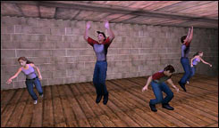

トリガ
ExampleMapsTriggers （サンプルマップ トリガ） この文書には二つのマップが登場します。ひとつは基本トリガ実例のご紹介、もうひとつはTriggerCondition （トリガの状態） の利用法についてご説明しています。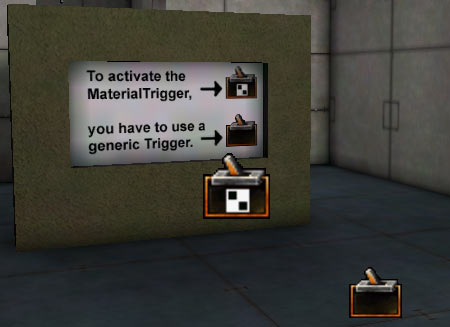
サウンド
ExampleMapsSounds （サンプルマップ サウンド） このマップでは、レベルで利用するサウンドの様々な手法をご覧いただけます。
ハード シェーディング機能
UsingHardwareShaders （ハード シェーディング機能） この文書（Technical（専門技術）セクション提供）では、独自のハード シェーディング機能を構築する方法をご紹介します。このサンプルマップには下の添付ファイルは含まれていませんが、専用ページからダウンロードできます。
Karma （カルマ) コロシアム
ExampleMapsKarmaColosseum （サンプルマップ カルマ コロシアム） このマップでは、シンプルなKarmaの基本プリミティブから、KConstraints （K拘束条件） でくくられた複数パーツ群や壊れやすいジオメトリを擁するより複雑なオブジェクトまで、バラエティー豊かなKarmaオブジェクトを作成する方法をご覧いただけます。
ビルド2107用のKarma実例
KarmaExampleUT2003 （KarmaサンプルUT2003）（注： このマップはビルド2107 UT2K3用です。） このマップでは、カタパルト、スイングドア、そして宙吊りで回転するファンをKarmaで作成した手順をご覧いただけます。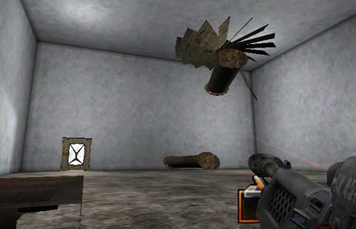
EPICデモマップ
ExampleMapsEPIC （サンプルマップ EPIC） ここにはEPICが提供してきた様々なサンプルマップがあります。解説文はほとんどありませんが、マチネ マップ、マテリアル マップ、パーティクル手法、そしてサウンドマップなどをはじめとした、ダウンロード可能なマップを再生できます。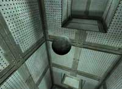


注： ZIPファイルをこのページから各関連文書リンクへ移動ました。